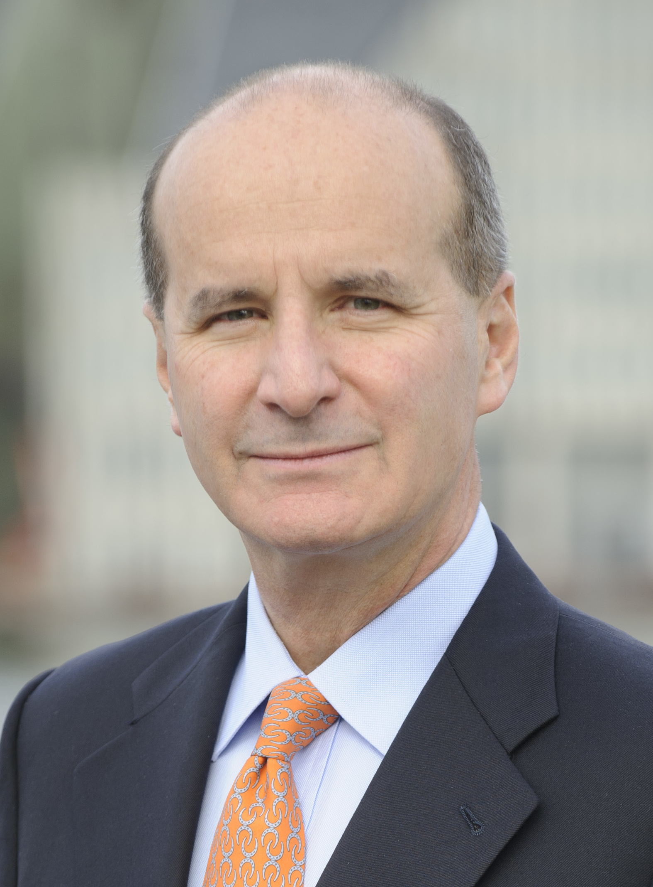

Jose Maria Figueres Olsen
Partido Liberacion Nacional
José María Figueres Olsen (Catedral, San José, 24 de diciembre de 1954)
es un ingeniero industrial, político y consultor internacional costarricense.
Figueres fue ministro de Comercio Exterior de 1986 a 1988,
ministro de Agricultura y Ganadería de 1989 a 1990
durante la administración Arias Sánchez (1986-1990)
y 42.° presidente de la República de Costa Rica de 1994 a 1998.
Descargar Biografia
Plan de Gobierno
Principales aspectos que propone en el plan de gobierno, según eje temático
- Ambiente y Energía
- Desarrollo Social y Territorial
- Infraestructura y Transportes
- Reforma Estado / Reforma Politica
- Derechos Humanos
- Economia
- Seguridad
- Pobreza